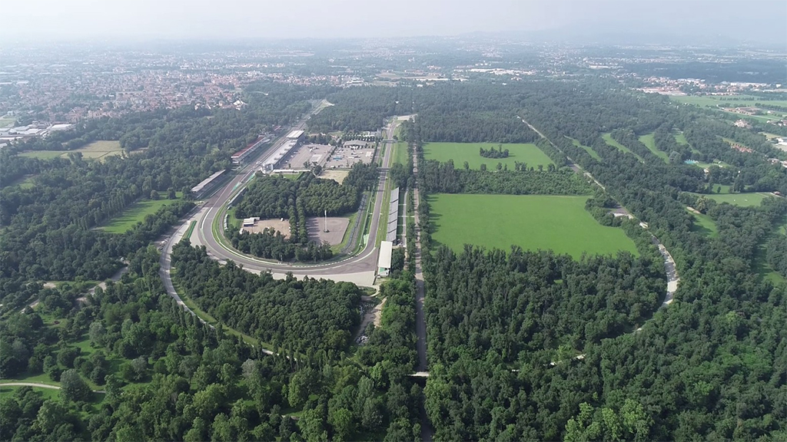
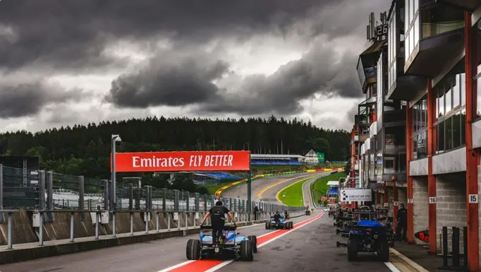
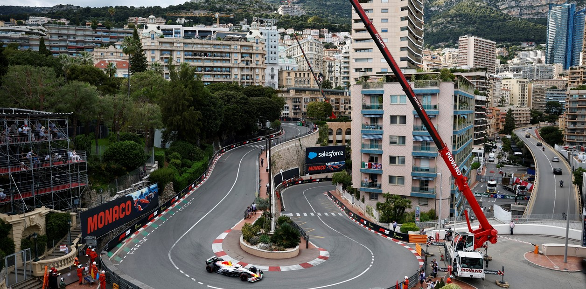

Os Circuitos que Definem o Esporte a Motor
- Autodromo Nazionale di Monza (Itália) — O Templo da Velocidade
Inaugurado em 1922, Monza é sinônimo de alta adrenalina. Composto por longas retas cortando o Parque Real de Milão, os carros passam grande parte da volta com o acelerador totalmente cravado no talo, atingindo as maiores velocidades médias do calendário da Fórmula 1. A paixão fanática dos tifosi vestidos de vermelho transforma a etapa italiana em uma experiência religiosa. - Circuit de Spa-Francorchamps (Bélgica) — O Desafio Definitivo
Aninhado nas florestas das Ardenas, Spa é amplamente considerado o circuito favorito dos pilotos. Com mais de 7 quilômetros de extensão, a pista oferece variações drásticas de relevo. Seu ponto alto é a lendária sequência de Eau Rouge e Raidillon — uma curva em "S" de subida íngreme e cega onde os carros sofrem forças G extremas de compressão a mais de 300 km/h. - Circuit de Monaco (Mônaco) — O Glamour e o Limite do Erro
Correr nas ruas estreitas de Monte Carlo é um exercício de precisão cirúrgica. Sem áreas de escape (as barreiras de proteção ficam a centímetros dos carros), um erro mínimo de cálculo custa a corrida. É o circuito mais lento do mundial (passando pelo famoso gancho Loews / Fairmont), mas vencer ali garante ao piloto imunidade eterna na galeria dos grandes da história. - Silverstone Circuit (Reino Unido) — O Berço da F1
Construído sobre uma antiga base de bombardeiros da Segunda Guerra Mundial, Silverstone recebeu o primeiro Grande Prêmio da história do Campeonato Mundial de Fórmula 1 em 1950. É uma pista de altíssima velocidade impulsionada por curvas fluidas e desafiadoras como a icônica sequência de Maggots, Becketts e Chapel. - Suzuka International Racing Course (Japão) — A Maestria Técnica
Desenhado no formato de um "oito" (com um viaduto cruzando a própria pista), Suzuka é implacável com os erros. Suas curvas em S encadeadas no primeiro setor e a temida curva 130R exigem um acerto aerodinâmico perfeito e coragem pura. Foi palco de inúmeras decisões de títulos mundiais históricos, incluindo as memoráveis batalhas entre Ayrton Senna e Alain Prost.





"Para vencer em pistas como Spa ou Mônaco, você não pode apenas ser rápido; você precisa respeitar o fantasma de cada curva."